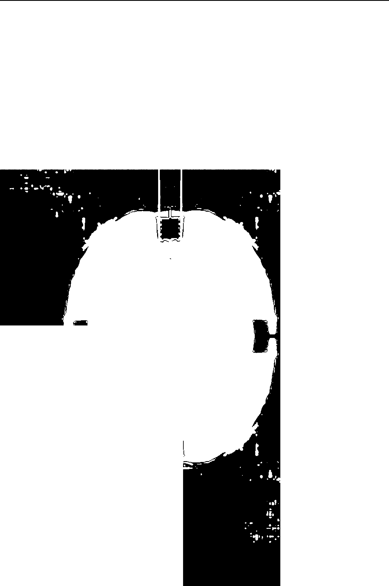

Rob Halverson
“Softly beautiful are the plenty outside all today”
2018, 204 pages, b/w
8.5 x 11 in ( 21.59 x 27.94 cm)
USD 100.00
Die Filme Helke Bayrles gehen über das Dokumentarische hinaus. Sie sind subjektive und intime Beobachtungen der Künstlerpersönlichkeiten und der Entstehungsprozesse der einzelnen Ausstellungen. Das Besondere an Helke Bayrles Filmen beruht auf der Kontinuität ihrer Arbeit und ihrer offenen Herangehensweise. Beim Filmen folgt sie jeweils einer anderen, der Situation entsprechenden Logik. Auf spielerische und reflektierte Art verdichtet sie dieses Material anschließend zu variationsreichen, kurzen Filmen.
http://rob-halverson.com/